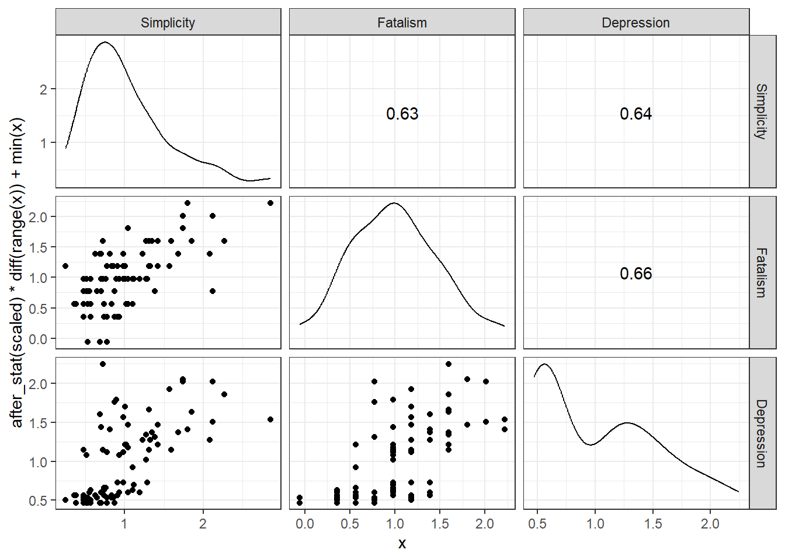

12 Ex: Effect Size - Ginzberg Depression
Compiled: October 15, 2025
References:
http://www.philender.com/courses/intro/notes/cor1.html https://lytarhan.rbind.io/post/variancepartitioning/ https://stats.stackexchange.com/questions/552451/which-r-functions-are-correct-for-estimating-partial-eta-squared-for-effects-in
# install.packages("remotes")
# remotes::install_github("sarbearschwartz/apaSupp") # 9/17/2025
library(carData)
library(tidyverse)
library(flextable)
library(apaSupp) # not on CRAN, get from GitHub (above)
library(corrplot)
library(GGally)
library(ggpubr)
library(car)
library(performance)
library(ggResidpanel)
library(DescTools)
library(parameters)12.1 PURPOSE
12.1.1 Background
Fatalism has been studied as a health belief since 1980. Several studies have found a positive association between fatalism and depression. Researchers have suggested that fatalism can make people more vulnerable to depression.
If you have pathological Simplicity thinking, you can’t think gray about nearly anything. You see everything in life as a black-and-white film. You think in such extremes, so you end up feeling in these extremes as well.
12.1.2 Research Question
Is there a relationship between depression and beliefs (simplicity and fatalism)?
More so, if we control for the assumed association between fatalism and depression, does simplistic beliefs play an additional role?
12.1.3 Data Description
The data for psychiatric patients (n = 84) hospitalized for depression is provided by the carData package.
Source: Personal communication from Georges Monette, Department of Mathematics and Statistics, York University, with the permission of the original investigator.
References: Fox, J. (2016) Applied Regression Analysis and Generalized Linear Models, Third Edition. Sage.
12.1.3.1 Variables
simplicityMeasures subject’s need to see the world in black and whitefatalismFatalism scaledepressionBeck self-report depression scale
Rows: 82
Columns: 6
$ simplicity <dbl> 0.92983, 0.91097, 0.53366, 0.74118, 0.53366, 0.62799, 0.778…
$ fatalism <dbl> 0.35589, 1.18439, -0.05837, 0.35589, 0.77014, 1.39152, 0.35…
$ depression <dbl> 0.59870, 0.72787, 0.53411, 0.56641, 0.50182, 0.56641, 0.469…
$ adjsimp <dbl> 0.75934, 0.72717, 0.62176, 0.83522, 0.47697, 0.40664, 0.845…
$ adjfatal <dbl> 0.10673, 0.99915, 0.03811, 0.42218, 0.81423, 1.23261, 0.297…
$ adjdep <dbl> 0.41865, 0.51688, 0.70699, 0.65639, 0.53518, 0.34042, 0.421…12.2 EXPLORATORY DATA ANALYSIS
Before embarking on any inferencial anlaysis or modeling, always get familiar with your variables one at a time (univariate), as well as pairwise (bivariate).
12.2.1 Summary Statistics
12.2.1.1 Univariate
df_ginz %>%
dplyr::select("Simplicity" = simplicity,
"Fatalism" = fatalism,
"Depression" = depression) %>%
apaSupp::tab_desc(caption = "Description of Psychiatric Patients Hospitalized for Depression")NA | M | SD | min | Q1 | Mdn | Q3 | max | |
|---|---|---|---|---|---|---|---|---|
Simplicity | 0 | 1.00 | 0.50 | 0.25 | 0.66 | 0.88 | 1.27 | 2.85 |
Fatalism | 0 | 1.00 | 0.50 | -0.06 | 0.56 | 0.98 | 1.39 | 2.22 |
Depression | 0 | 1.00 | 0.50 | 0.47 | 0.57 | 0.82 | 1.37 | 2.25 |
Note. N = 82. NA = not available or missing; Mdn = median; Q1 = 25th percentile; Q3 = 75th percentile. | ||||||||
12.2.1.2 Bivariate
df_ginz %>%
dplyr::select("Simplicity" = simplicity,
"Fatalism" = fatalism,
"Depression" = depression) %>%
apaSupp::tab_cor(caption = "Correlations Between Continuous Meaurses")Variable Pair | r | p | |
|---|---|---|---|
Simplicity | Fatalism | .630 | < .001*** |
Simplicity | Depression | .640 | < .001*** |
Fatalism | Depression | .660 | < .001*** |
Note. N = 82. r = Pearson's Product-Moment correlation coefficient. | |||
* p < .05. ** p < .01. *** p < .001. | |||
df_ginz %>%
dplyr::select("Simplicity" = simplicity,
"Fatalism" = fatalism,
"Depression" = depression) %>%
cor(method = "pearson") %>%
corrplot::corrplot.mixed()
12.2.2 Visualize Distributions

12.2.2.2 Bivariate
df_ginz %>%
dplyr::select("Simplicity" = simplicity,
"Fatalism" = fatalism,
"Depression" = depression) %>%
data.frame %>%
GGally::ggscatmat() +
theme_bw()
df_ginz %>%
ggplot(aes(x = simplicity,
y = depression)) +
geom_point() +
theme_bw() +
geom_smooth(method = "lm",
formula = y ~ x) +
ggpubr::stat_regline_equation(label.x = 0.25,
label.y = 2.45,
size = 6) +
labs(x = "Simplicity\n(need to see the world in black and white)",
y = "Observed Depression\n(Beck self-report)")
df_ginz %>%
ggplot(aes(x = fatalism,
y = depression)) +
geom_point() +
theme_bw() +
geom_smooth(method = "lm",
formula = y ~ x) +
ggpubr::stat_regline_equation(label.x = 0,
label.y = 2.45,
size = 6) +
labs(x = "Fatalism\n(belief that all events are predetermined and therefore inevitable)",
y = "Observed Depression\n(Beck self-report)")
12.3 REGRESSION ANALYSIS
- The dependent variable (DV) is depression score (\(Y\))
- The independent variables (IVs) are 2 beliefs, simplicity and fatalism (\(X_1\), \(X_2\))

12.3.1 Fit Models
The lm() function must be supplied with at least two
options:
-
a formula:
Y ~ X -
a dataset:
data = XXXXXXX
When a model is fit and directly saved as a named object via the
assignment opperator (<-), no output is produced.
12.3.1.1 Model 1: Fatalism
b | (SE) | p |
|
|
| |
|---|---|---|---|---|---|---|
(Intercept) | 0.34 | (0.09) | < .001*** | |||
fatalism | 0.66 | (0.08) | < .001*** | 0.66 | .432 | .432 |
R² | .432 | |||||
Adjusted R² | .425 | |||||
Note. N = 82. = standardize coefficient; = semi-partial correlation; = partial correlation; p = significance from Wald t-test for parameter estimate. | ||||||
* p < .05. ** p < .01. *** p < .001. | ||||||
12.3.1.2 Model 2: Simplicity
b | (SE) | p |
|
|
| |
|---|---|---|---|---|---|---|
(Intercept) | 0.36 | (0.10) | < .001*** | |||
simplicity | 0.64 | (0.09) | < .001*** | 0.64 | .414 | .414 |
R² | .414 | |||||
Adjusted R² | .406 | |||||
Note. N = 82. = standardize coefficient; = semi-partial correlation; = partial correlation; p = significance from Wald t-test for parameter estimate. | ||||||
* p < .05. ** p < .01. *** p < .001. | ||||||
12.3.1.3 Model 3: Both Beliefs
b | (SE) | p |
| VIF |
|
| |
|---|---|---|---|---|---|---|---|
(Intercept) | 0.20 | (0.09) | .035* | ||||
fatalism | 0.42 | (0.10) | < .001*** | 0.42 | 1.66 | .105 | .179 |
simplicity | 0.38 | (0.10) | < .001*** | 0.38 | 1.66 | .087 | .153 |
R² | .519 | ||||||
Adjusted R² | .507 | ||||||
Note. N = 82. = standardize coefficient; VIF = variance inflation factor; = semi-partial correlation; = partial correlation; p = significance from Wald t-test for parameter estimate. | |||||||
* p < .05. ** p < .01. *** p < .001. | |||||||
12.3.2 Compare Models
| Model 1 | Model 2 | Model 3 | ||||||
|---|---|---|---|---|---|---|---|---|---|
Variable | b | (SE) | p | b | (SE) | p | b | (SE) | p |
(Intercept) | 0.36 | (0.10) | < .001*** | 0.34 | (0.09) | < .001*** | 0.20 | (0.09) | .035* |
simplicity | 0.64 | (0.09) | < .001*** | 0.38 | (0.10) | < .001*** | |||
fatalism | 0.66 | (0.08) | < .001*** | 0.42 | (0.10) | < .001*** | |||
AIC | 80.23 | 77.62 | 66.05 | ||||||
BIC | 87.45 | 84.84 | 75.67 | ||||||
R² | .414 | .432 | .519 | ||||||
Adjusted R² | .406 | .425 | .507 | ||||||
Note. | |||||||||
* p < .05. ** p < .01. *** p < .001. | |||||||||
# A tibble: 2 × 6
Res.Df RSS Df `Sum of Sq` F `Pr(>F)`
<dbl> <dbl> <dbl> <dbl> <dbl> <dbl>
1 80 11.9 NA NA NA NA
2 79 9.74 1 2.13 17.2 0.0000828# A tibble: 2 × 6
Res.Df RSS Df `Sum of Sq` F `Pr(>F)`
<dbl> <dbl> <dbl> <dbl> <dbl> <dbl>
1 80 11.5 NA NA NA NA
2 79 9.74 1 1.75 14.2 0.000312
12.4 EFFECT SIZES
Variance Explained = variance in the DV “explained by” or “attributed to” the IV(s)
12.4.1 Variance Partitioning
Variance in the DV - Total
[1] 0.2499999Variance in the SV - Not attributed to Simplicity
[1] 0.1465519Variance in the SV - Not attributed to Fatalism
[1] 0.141967Variance in the SV - Not attributed to the combination of Simplicity and Fatalism
[1] 0.1203068


12.4.2 Variance Explained
12.4.2.1 R-squared
AKA: “Coefficient of Determination”
Total for all the predictors in the model
From Simplicity, not controlling for Fatalism = .414
From Fatalism, not controlling for Simplicity = .432
Total COLLECTIVELY from Both Beliefs = .519
“Coefficient of NON-Determination”
[1] 0.48112.4.2.2 Eta-Squared
AKA: “Semi-partial Correlation”
- Unique from only Simplicity, WHILE controlling for Fatalism
[1] 0.087- Unique from only Fatalism, WHILE controlling for Simplicity
[1] 0.105- Shared from OVERLAP in Both Beliefs
[1] 0.327
12.5 APA WRITE-UP
12.5.1 Methods
A sample of 82 psychiatric patients hospitalized for depression completed the Beck Depression Inventory by self-report. Their beliefs in simplicity (black and white thinking) and fatalism (fate controls everything) were also self-reported and scored.
To assess the potential relationship between both these beliefs and depressive symptoms, first Pearson correlations were computed between pairs of all three measures. Then unadjusted, simple linear regression models for each belief score separately were compared to the multiple linear regression including both beliefs. Multiple linear regression was used to further investigate the hypothesized association between simplicity and depression after controlling for the previously documented correlation between fatalism and depression. Variance inflation factors (VIF) were computed to assess potential concern regarding colinearity between the two beliefs.
12.5.2 Results
A summary of the participant measures is provided in Table 1. Notably, the distribution of simplicity beliefs exhibited a high degree of positive skewness, while depressive symptoms was less positively skewed (see supplemental materials).
Depressive Symptoms were positively correlated with both fatalism beliefs (r = .660) and simplicity beliefs (r = .640). A similar degree of correlation was manifest between the two types of belief (r = .630).
The unadjusted models are presented in Table 2. The first model replicated previous studies, as fatalism beliefs exhibited a strong and significant association with depressive symptoms, b = 0.66, SE = 0.08, p < .001, \(R^2\) = .43. The second model showed a similar association between simplicity beliefs and depressive symptoms, b = 0.64, SE = 0.09, p < .001, \(R^2\) = .41.
Table 3 details the final model which revealed that after accounting for fatalism’s role, simplicity beliefs accounted for 15% of the remaining variance in depressive symptoms, \(\eta_p^2\) = .153. Over half of the total variance in depressive symptoms may be attributed to both beliefs together, \(R_{adj}^2\) = .51. No concern was raised regarding multicolinearity, thus each belief exhibited a distinct association with depression symptom. Fatalism belief did expressed a slightly stronger association, b = 0.42, SE = 0.10, p < .001, \(\eta^2\) = .105, compared to simplicity beliefs, b = 0.38, SE = 0.10, p < .001, \(\eta^2\) = .087.
12.5.3 Tables
df_ginz %>%
dplyr::select("Simplicity Beliefs" = simplicity,
"Fatalism Beliefs" = fatalism,
"Depressive Symptoms" = depression) %>%
apaSupp::tab_desc(caption = "Description of Sampled Psychiatric Patients Hospitalized for Depression",
general_note = "All measures are self-reported. Depressive symptoms are captured by the Beck Depression Inventory and each belief is scored between zero and three.")NA | M | SD | min | Q1 | Mdn | Q3 | max | |
|---|---|---|---|---|---|---|---|---|
Simplicity Beliefs | 0 | 1.00 | 0.50 | 0.25 | 0.66 | 0.88 | 1.27 | 2.85 |
Fatalism Beliefs | 0 | 1.00 | 0.50 | -0.06 | 0.56 | 0.98 | 1.39 | 2.22 |
Depressive Symptoms | 0 | 1.00 | 0.50 | 0.47 | 0.57 | 0.82 | 1.37 | 2.25 |
Note. N = 82. NA = not available or missing; Mdn = median; Q1 = 25th percentile; Q3 = 75th percentile. All measures are self-reported. Depressive symptoms are captured by the Beck Depression Inventory and each belief is scored between zero and three. | ||||||||
apaSupp::tab_lms(list("Model 1\nFatalism Only" = fit_lm_fat,
"Model 2\nSimplicity Only" = fit_lm_sim,
"Model 3\nBoth Beliefs" = fit_lm_both),
narrow = TRUE,
var_labels = c("simplicity" = "Simplicity",
"fatalism" = "Fatalism"),
caption = "Parameter Estimates for Unadjusted, Simple Linear Models Regressing Depressive Symptoms on EAch Belief Score Seperately",
general_note = "All measures are self-reported. Depressive symptoms are captured by the Beck Depression Inventory and each belief is scored between zero and three.",
p_note = "apa13")
| Model 1 | Model 2 | Model 3 | |||
|---|---|---|---|---|---|---|
Variable | b | (SE) | b | (SE) | b | (SE) |
(Intercept) | 0.34 | (0.09) *** | 0.36 | (0.10) *** | 0.20 | (0.09) * |
Fatalism | 0.66 | (0.08) *** | 0.42 | (0.10) *** | ||
Simplicity | 0.64 | (0.09) *** | 0.38 | (0.10) *** | ||
AIC | 77.62 | 80.23 | 66.05 | |||
BIC | 84.84 | 87.45 | 75.67 | |||
R² | .432 | .414 | .519 | |||
Adjusted R² | .425 | .406 | .507 | |||
Note. All measures are self-reported. Depressive symptoms are captured by the Beck Depression Inventory and each belief is scored between zero and three. | ||||||
* p < .05. *** p < .001. | ||||||
apaSupp::tab_lm(fit_lm_both,
var_labels = c("simplicity" = "Simplicity",
"fatalism" = "Fatalism"),
caption = "Parameter Estimates for Multiple Linear Model Regressing Depressive Symptoms on Both Belief Scorse",
general_note = "All measures are self-reported. Depressive symptoms are captured by the Beck Depression Inventory and each belief is scored between zero and three.",
p_note = "apa13",
std = FALSE,
vif = TRUE)b | (SE) | p | VIF |
|
| |
|---|---|---|---|---|---|---|
(Intercept) | 0.20 | (0.09) | .035* | |||
Fatalism | 0.42 | (0.10) | < .001*** | 1.66 | .105 | .179 |
Simplicity | 0.38 | (0.10) | < .001*** | 1.66 | .087 | .153 |
R² | .519 | |||||
Adjusted R² | .507 | |||||
Note. N = 82. NAVIF = variance inflation factor; = semi-partial correlation; = partial correlation; p = significance from Wald t-test for parameter estimate. All measures are self-reported. Depressive symptoms are captured by the Beck Depression Inventory and each belief is scored between zero and three. | ||||||
* p < .05. *** p < .001. | ||||||